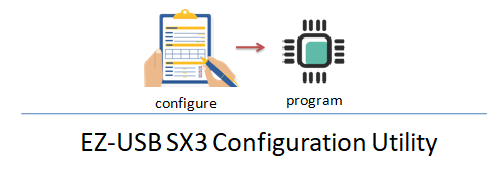

EZ-USB SX3 Configuration Utility is a application that allows users to configure every aspect of EZ-USB SX3 Superspeed peripheral controller.
The tool also allows programming the created configuration to the controller
